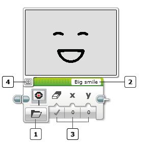

					<table cellpadding="0" cellspacing="0" border="0"><tbody><tr><td>
	
						<h1>显示模块<a name="top"></a></h1>
		<div id="block_111" class="block blockHeader">
				<table cellspacing="0" cellpadding="0" border="0">
			<tbody><tr>
				<td valign="top" class="image"></td>
				<td valign="top" class="description"><div class="text-wrapper">显示模块可以在 EV3 程序块显示屏上显示文本或图形。</div></td>
			</tr>
		</tbody></table>
			</div>
	<div id="block_112" class="block blockChaptor">
		<div class="title">选择显示模式</div>
		<div class="description"><br>
<br>
 模式选择器<br>
 模块文本字段 <br>
 输入<br>
 “显示预览”按钮<br>
<br>
使用模式选择器选择要显示的文本或图形的类型。选择模式之后，可以为输入选择值。可用输入会因模式而异。下面介绍了模式和输入。<br>
<br>
可以单击“显示预览”按钮以查看显示模块将在 EV3 显示上显示的内容预览。为模块选择输入值时，可以保持预览处于打开状态。</div>
			<div class="links">模式：<a href="./index.html?id=Display#Mode_String">文本 － 像素</a>、<a href="./index.html?id=Display#Mode_StringGrid">文本 － 网格</a>、<a href="./index.html?id=Display#Mode_Line">形状 － 线</a>、<a href="./index.html?id=Display#Mode_Circle">形状 － 圆圈</a>、<a href="./index.html?id=Display#Mode_Rectangle">形状 － 矩形</a>、<a href="./index.html?id=Display#Mode_Point">形状 － 点</a>、<a href="./index.html?id=Display#Mode_File">图像</a>、<a href="./index.html?id=Display#Mode_Clear">重置屏幕</a></div>
	</div>
	<div id="block_113" class="block blockChaptor">
		<div class="title"><a name="DisplayCoordinates" style="position:relative; top:-10px;"></a>显示坐标</div>
		<div class="description">许多显示模块模式使用 X 和 Y 坐标指定要绘制项目的位置。坐标指定 EV3 程序块显示屏上的像素位置。位置 (0, 0) 处于显示屏左上角，如下图所示。<br>
<br>
<br>
<br>
显示屏为 178 像素宽，128 像素高。X 坐标值范围从显示屏左侧的 0 到右侧的 177。Y 坐标值范围从顶部的 0 到底部的 127。</div>
	</div>
	<div id="block_114" class="block blockTip">
		<div class="title">提示和技巧</div>
		<div class="boxContent">
			<div class="description">可以使用显示模块左上角的“显示预览”按钮帮助查找正确的显示坐标。</div>
				</div>
	</div>
	<div id="block_116" class="block blockChaptor">
		<div class="title">模式</div>
		<div class="description"></div>
	</div>
	<div id="block_117" class="block blockMode">
		<div class="title"><a name="Mode_String" style="position:relative; top:-10px;"></a>文本 － 像素</div>
		<div class="description"><br>
<br>
“文本 － 像素”模式可以在 EV3 程序块显示屏上的任何位置显示文本。<br>
<br>
如果<a href="./index.html?id=Display#ClearScreen">清除屏幕</a>为“真”，则会在绘制文本之前清除显示屏内容。<br>
<br>
<a href="./index.html?id=Display#Text">文本</a>输入位于模块顶部。它包含要显示的文本字符串。选择“连线”可显示可以接受<a href="./index.html?id=DataWires.html">数据线</a>的<a href="./index.html?id=Display#Text">文本</a>输入。文本可以包含<a href="./index.html?id=SupportedText">支持的文本</a>字符集中的任何字符。<br>
<br>
<a href="./index.html?id=Display#X">X</a> 和 <a href="./index.html?id=Display#Y">Y</a> 输入指定文本起始点的<a href="./index.html?id=Display#DisplayCoordinates">显示坐标</a>，这是所显示文本的左上角。<br>
<br>
使用<a href="./index.html?id=Display#InvertColor">颜色</a>输入选择文本的颜色。如果选择“黑色”，则文本会以黑色显示在白色背景上。如果选择“白色”，则文本会以白色显示在黑色背景上。<br>
<br>
可以使用<a href="./index.html?id=Display#Size">字体</a>输入在三种不同字型中选择：“常规”、“粗体”和“大”。</div>
			<div class="links">使用的<a href="./index.html?id=Display#Inputs">输入</a>：<a href="./index.html?id=Display#ClearScreen">清除屏幕</a>、<a href="./index.html?id=Display#Text">文本</a>、<a href="./index.html?id=Display#X">X</a>、<a href="./index.html?id=Display#Y">Y</a>、<a href="./index.html?id=Display#InvertColor">颜色</a>、<a href="./index.html?id=Display#Size">字体</a></div>
	</div>
	<div id="block_118" class="block blockExample">
		<div class="title">示例</div>
		<div class="image"></div>
		<div class="description">此程序使用“大”字体在显示屏中心显示“Hello!”。</div>
	</div>
	<div id="block_119" class="block blockMode">
		<div class="title"><a name="Mode_StringGrid" style="position:relative; top:-10px;"></a>文本 － 网格</div>
		<div class="description"><br>
<br>
“文本 － 网格”模式显示与行和列组成的网格对齐的文本。这样可以轻松显示和对齐多行文本。行的高度具有足够空间采用“常规”或“粗体”字体显示一行文本，采用这两种字体的每个字符的宽度都是一列。<br>
 <br>
如果<a href="./index.html?id=Display#ClearScreen">清除屏幕</a>为“真”，则会在绘制文本之前清除显示。 <br>
<br>
<a href="./index.html?id=Display#Textlink">文本</a>输入位于模块顶部。它包含要显示的文本字符串。选择“连线”可显示可以接受数据线的<a href="./index.html?id=Display#Textlink">文本</a>输入。文本可以包含<a href="./index.html?id=SupportedText">支持的文本</a>字符集中的任何字符。<br>
<br>
<a href="./index.html?id=Display#Column">列</a>输入指定文本的起始列（水平位置）。每列都是 8 像素宽。列的编号从左侧的 0 到右侧的 21。<br>
 <br>
<a href="./index.html?id=Display#Row">行</a>输入指定文本的行或“行号”（垂直位置）。每行都是 10 像素高。行 0 处于显示顶部，行 11 靠近显示底部。</div>
			<div class="links">使用的<a href="./index.html?id=Display#Inputs">输入</a>：<a href="./index.html?id=Display#ClearScreen">清除屏幕</a>、<a href="./index.html?id=Display#Text">文本</a>、<a href="./index.html?id=Display#Column">列</a>、<a href="./index.html?id=Display#Row">行</a>、<a href="./index.html?id=Display#InvertColor">颜色</a>、<a href="./index.html?id=Display#Size">字体</a></div>
	</div>
	<div id="block_120" class="block blockTip">
		<div class="title">提示和技巧</div>
		<div class="boxContent">
			<div class="description">列的宽度与“常规”和“粗体”字体的字符的宽度相同，因此在使用这两种字体时向<a href="./index.html?id=Display#Column">列</a>加 1 会使文本起始位置向右移动一个字符。“大”字体的字符的宽度和高度分别是“常规”字体的两倍，因此每个字符占用两列和两行。</div>
				</div>
	</div>
	<div id="block_122" class="block blockStep">
		<div class="title"></div>
		<div class="description">使用<a href="./index.html?id=Display#InvertColor">颜色</a>输入选择文本的颜色。如果选择“黑色”，则文本会以黑色显示在白色背景上。如果选择“白色”，则文本会以白色显示在黑色背景上。<br>
<br>
可以使用<a href="./index.html?id=Display#Size">字体</a>输入在三种不同字型中选择：“常规”、“粗体”和“大”。</div>
			<div class="links">使用的<a href="./index.html?id=Display#Inputs">输入</a>：<a href="./index.html?id=Display#ClearScreen">清除屏幕</a>、<a href="./index.html?id=Display#Textlink">文本</a>、<a href="./index.html?id=Display#Column">列</a>、<a href="./index.html?id=Display#Row">行</a>、<a href="./index.html?id=Display#InvertColor">颜色</a>、<a href="./index.html?id=Display#Size">字体</a></div>
	</div>
	<div id="block_123" class="block blockExample">
		<div class="title">示例</div>
		<div class="image"></div>
		<div class="description">此程序显示两行文本。第二个显示模块对<a href="./index.html?id=Display#ClearScreen">清除屏幕</a>输入使用“伪”来添加第二行，而不擦除第一行。</div>
	</div>
	<div id="block_124" class="block blockTip">
		<div class="title">提示和技巧</div>
		<div class="boxContent">
			<div class="description">以“大”字体显示多行文本时，请在换行时向<a href="./index.html?id=Display#Row">行</a>输入加 2，以避免行重叠。</div>
				</div>
	</div>
	<div id="block_126" class="block blockMode">
		<div class="title"><a name="Mode_Line" style="position:relative; top:-10px;"></a>形状 － 线</div>
		<div class="description">“形状 － 线”模式在显示屏上的任何两个点之间绘制一条直线。<br>
<br>
如果<a href="./index.html?id=Display#ClearScreen">清除屏幕</a>为“真”，则会在绘制线之前清除显示。<br>
<br>
<a href="./index.html?id=Display#X1">X1</a> 和 <a href="./index.html?id=Display#Y1">Y1</a> 输入指定线上第一个点的<a href="./index.html?id=Display#DisplayCoordinates">显示坐标</a>。<br>
<br>
<a href="./index.html?id=Display#X2">X2</a> 和 <a href="./index.html?id=Display#Y2">Y2</a> 输入指定第二个点的坐标。<br>
<br>
可以使用<a href="./index.html?id=Display#InvertColor">颜色</a>输入选择黑色或白色线。仅当<a href="./index.html?id=Display#ClearScreen">清除屏幕</a>为“伪”并且线在上一个显示模块显示某些黑色内容的区域上绘制时，白色线才可见。</div>
			<div class="links">使用的<a href="./index.html?id=Display#Inputs">输入</a>：<a href="./index.html?id=Display#ClearScreen">清除屏幕</a>、<a href="./index.html?id=Display#X1">X1</a>、<a href="./index.html?id=Display#Y1">Y1</a>、<a href="./index.html?id=Display#X2">X2</a>、<a href="./index.html?id=Display#Y2">Y2</a>、<a href="./index.html?id=Display#InvertColor">颜色</a></div>
	</div>
	<div id="block_127" class="block blockExample">
		<div class="title">示例</div>
		<div class="image"></div>
		<div class="description">此程序会在 EV3 程序块显示屏上绘制对角线。</div>
	</div>
	<div id="block_128" class="block blockMode">
		<div class="title"><a name="Mode_Circle" style="position:relative; top:-10px;"></a>形状 － 圆圈</div>
		<div class="description"><br>
<br>
“形状 － 圆圈”模式在显示屏上绘制圆圈。 <br>
如果<a href="./index.html?id=Display#ClearScreen">清除屏幕</a>为“真”，则会在绘制圆圈之前清除显示。<br>
<br>
<a href="./index.html?id=Display#X">X</a> 和 <a href="./index.html?id=Display#Y">Y</a> 输入指定圆心的<a href="./index.html?id=Display#DisplayCoordinates">显示坐标</a>。<a href="./index.html?id=Display#Radius">半径</a>输入以像素为单位指定圆的半径。<br>
<br>
如果<a href="./index.html?id=Display#Fill">填充</a>为“真”，则会填充圆的内部。如果<a href="./index.html?id=Display#Fill">填充</a>为“伪”，则仅绘制圆的轮廓。<br>
<br>
可以使用<a href="./index.html?id=Display#InvertColor">颜色</a>输入选择黑色或白色圆圈。仅当<a href="./index.html?id=Display#ClearScreen">清除屏幕</a>为“伪”并且圆圈在上一个显示模块显示某些黑色内容的区域上绘制时，白色圆圈才可见。</div>
			<div class="links">使用的<a href="./index.html?id=Display#Inputs">输入</a>：<a href="./index.html?id=Display#ClearScreen">清除屏幕</a>、<a href="./index.html?id=Display#X">X</a>、<a href="./index.html?id=Display#Y">Y</a>、<a href="./index.html?id=Display#Radius">半径</a>、<a href="./index.html?id=Display#Fill">填充</a>、<a href="./index.html?id=Display#InvertColor">颜色</a></div>
	</div>
	<div id="block_129" class="block blockExample">
		<div class="title">示例</div>
		<div class="image"></div>
		<div class="description">此程序连续显示一个实心圆，该圆的半径是来自颜色传感器的环境光强度值。显示每十分之一秒更新一次。</div>
	</div>
	<div id="block_130" class="block blockMode">
		<div class="title"><a name="Mode_Rectangle" style="position:relative; top:-10px;"></a>形状 － 矩形</div>
		<div class="description"><br>
<br>
“形状 － 矩形”模式在显示屏上绘制矩形。<br>
<br>
如果<a href="./index.html?id=Display#ClearScreen">清除屏幕</a>为“真”，则会在绘制矩形之前清除显示。<br>
<br>
<a href="./index.html?id=Display#X">X</a> 和 <a href="./index.html?id=Display#Y">Y</a> 输入指定矩形左上角的<a href="./index.html?id=Display#DisplayCoordinates">显示坐标</a>。<a href="./index.html?id=Display#Width">宽度</a>和<a href="./index.html?id=Display#Height">高度</a>输入以像素为单位指定矩形的大小。<br>
<br>
如果<a href="./index.html?id=Display#Fill">填充</a>为“真”，则会填充矩形的内部。如果<a href="./index.html?id=Display#Fill">填充</a>为“伪”，则仅绘制矩形的轮廓。<br>
<br>
可以使用<a href="./index.html?id=Display#InvertColor">颜色</a>输入选择黑色或白色矩形。仅当<a href="./index.html?id=Display#ClearScreen">清除屏幕</a>为“伪”并且上一个显示模块在显示屏的同一区域中显示了某些黑色内容时，白色矩形才可见。</div>
			<div class="links">使用的<a href="./index.html?id=Display#Inputs">输入</a>：<a href="./index.html?id=Display#ClearScreen">清除屏幕</a>、<a href="./index.html?id=Display#X">X</a>、<a href="./index.html?id=Display#Y">Y</a>、<a href="./index.html?id=Display#Width">宽度</a>、<a href="./index.html?id=Display#Height">高度</a>、<a href="./index.html?id=Display#Fill">填充</a>、<a href="./index.html?id=Display#InvertColor">颜色</a></div>
	</div>
	<div id="block_131" class="block blockExample">
		<div class="title">示例</div>
		<div class="image"></div>
		<div class="description">此程序通过一个较大实心矩形，来使用黑色填充整个显示。然后在该矩形上绘制一个较小的白色矩形轮廓。</div>
	</div>
	<div id="block_132" class="block blockTip">
		<div class="title">提示和技巧</div>
		<div class="boxContent">
			<div class="description">可以使用实心白色矩形清除显示的一部分，而不影响显示的其他部分。</div>
				</div>
	</div>
	<div id="block_134" class="block blockMode">
		<div class="title"><a name="Mode_Point" style="position:relative; top:-10px;"></a>形状 － 点</div>
		<div class="description"><br>
<br>
“形状 － 点”模式在显示屏上绘制点。 <br>
如果<a href="./index.html?id=Display#ClearScreen">清除屏幕</a>为“真”，则会在绘制像素之前清除显示。<br>
<br>
<a href="./index.html?id=Display#X">X</a> 和 <a href="./index.html?id=Display#Y">Y</a> 输入指定要绘制的像素的<a href="./index.html?id=Display#DisplayCoordinates">显示坐标</a>。<br>
<br>
可以使用<a href="./index.html?id=Display#InvertColor">颜色</a>输入选择要以黑色还是白色绘制像素。采用白色绘制可以用于清除以前的显示模块绘制的黑色像素。</div>
			<div class="links">使用的<a href="./index.html?id=Display#Inputs">输入</a>：<a href="./index.html?id=Display#ClearScreen">清除屏幕</a>、<a href="./index.html?id=Display#X">X</a>、<a href="./index.html?id=Display#Y">Y</a>、<a href="./index.html?id=Display#InvertColor">颜色</a></div>
	</div>
	<div id="block_135" class="block blockMode">
		<div class="title"><a name="Mode_File" style="position:relative; top:-10px;"></a>图像</div>
		<div class="description"><br>
<br>
“图像”模式绘制图形图像文件。 <br>
<br>
<a href="./index.html?id=Display#Filename">文件名称</a>输入位于模块顶部。它使您可以在图像文件的列表中进行选择。“LEGO 图像”类别中的图像是随 EV3 软件包含的图像文件。“项目图像”类别中列出的图像是已在项目中使用的图像。这样可以在程序或项目中方便地多次使用相同图像。<br>
<br>
如果<a href="./index.html?id=Display#ClearScreen">清除屏幕</a>为“真”，则会在绘制图像之前清除显示。 <br>
<br>
<a href="./index.html?id=Display#X">X</a> 和 <a href="./index.html?id=Display#Y">Y</a> 输入指定图像左上角的<a href="./index.html?id=Display#DisplayCoordinates">显示坐标</a>。将使用绘制整个图像所需的空间大小，在下面及此点右侧绘制图像。对于大小适合填充整个显示屏的图像文件，请使用 <a href="./index.html?id=Display#X">X</a> = 0 和 <a href="./index.html?id=Display#Y">Y</a> = 0。</div>
			<div class="links">使用的<a href="./index.html?id=Display#Inputs">输入</a>：<a href="./index.html?id=Display#ClearScreen">清除屏幕</a>、<a href="./index.html?id=Display#Filename">文件名称</a>、<a href="./index.html?id=Display#X">X</a>、<a href="./index.html?id=Display#Y">Y</a></div>
	</div>
	<div id="block_136" class="block blockMode">
		<div class="title"><a name="Mode_Clear" style="position:relative; top:-10px;"></a>重置屏幕</div>
		<div class="description"><br>
<br>
“重置屏幕”模式使 EV3 程序块显示屏返回运行程序时显示的常规信息屏幕。此屏幕显示程序名称和其他反馈。当在 EV3 程序块上运行程序时，会显示此屏幕，直至程序中的第一个显示模块执行。</div>
	</div>
	<div id="block_137" class="block blockChaptor">
		<div class="title"><a name="KeepingDisplayedItemsVisible" style="position:relative; top:-10px;"></a>使显示的项目保持可见</div>
		<div class="description">当 EV3 程序结束时，EV3 程序块上的显示屏会清除并返回 EV3 程序块菜单显示。这会擦除程序显示的任何文本或图形。例如，如果程序包含单个显示模块并且其后没有任何内容，则会在程序结束时快速清除显示，这样您便无法查看显示模块的结果。<br>
<br>
如果要使显示在程序结束时保持显示，则需要将一个模块添加到程序结束，以避免程序立即结束，如以下示例显示。</div>
	</div>
	<div id="block_138" class="block blockExample">
		<div class="title">示例 1</div>
		<div class="image"></div>
		<div class="description">此程序使用<a href="./index.html?id=Wait">等待</a>模块在程序结束时设置 3 秒延迟。这会在程序结束时清除显示之前，使圆圈保持显示 3 秒。</div>
	</div>
	<div id="block_139" class="block blockExample">
		<div class="title">示例 2</div>
		<div class="image"></div>
		<div class="description">此程序在程序结束时使用<a href="./index.html?id=LoopCondition">循环</a>使程序永远保持运行。这会使圆圈保持显示，直至通过按压 EV3 程序块上的“返回”按钮来停止程序。</div>
	</div>
	<div id="block_140" class="block blockChaptor">
		<div class="title">显示多个项目</div>
		<div class="description">如果要在显示屏上同时显示多个文本或图形项目，请务必不要在各个项目之间清除 EV3 程序块显示。每个显示模块模式都具有<a href="./index.html?id=Display#ClearScreen">清除屏幕</a>输入。如果<a href="./index.html?id=Display#ClearScreen">清除屏幕</a>为“真”，则会在显示项目之前清除整个显示屏。这表示要显示多个项目，必须为每个显示模块（除了第一个）将<a href="./index.html?id=Display#ClearScreen">清除屏幕</a>设置为“伪”。</div>
			<div class="links">请参见<a href="./index.html?id=Display#Mode_StringGrid">文本 － 网格</a>和<a href="./index.html?id=Display#Mode_Rectangle">形状 － 矩形</a>模式中的编程示例。</div>
	</div>
	<div id="block_141" class="block blockChaptor">
		<div class="title">显示数字</div>
		<div class="description">可以通过将<a href="./index.html?id=DataWires.html">数据线</a>连接到显示文本模块的<a href="./index.html?id=Display#Text">文本</a>输入，在程序中显示数字值。数字数据会由数据线类型转换自动转换为文本（有关更多信息，请参见<a href="https://ev3-help-online.api.education.lego.com/Retail/zh-cn/page.html?Path=editor%2FDataWires">数据线</a>）。</div>
	</div>
	<div id="block_142" class="block blockTip">
		<div class="title">提示和技巧</div>
		<div class="boxContent">
			<div class="description">从模块顶部的<a href="./index.html?id=Display#Text">文本</a>输入中选择“连线”可显示可以接受数据线的<a href="./index.html?id=Display#Text">文本</a>输入。</div>
				</div>
	</div>
	<div id="block_144" class="block blockExample">
		<div class="title">示例</div>
		<div class="image"></div>
		<div class="description">此程序会在显示屏上连续显示来自颜色传感器的反射光线强度，每四分之一秒更新一次显示。</div>
	</div>
	<div id="block_145" class="block blockChaptor">
		<div class="title"><a name="Inputs" style="position:relative; top:-10px;"></a>输入 <a name="Parameters" style="position:relative; top:-10px;"></a></div>
		<div class="description">显示模块的输入指定要显示的文本或图形以及显示方式。可以将输入值直接输入到模块中。或者，可以通过<a href="./index.html?id=DataWires">数据线</a>从其他编程模块的输出提供值。</div>
	</div>
	<div id="block_146" class="block blockTable ">
		<table class="blockTable">
		

			<tbody><tr>
<th>输入</th><th>类型</th><th>允许的值</th><th>备注</th>			</tr>
<tr><td>清除屏幕 <a name="ClearScreen" style="position:relative; top:-10px;"></a></td><td>逻辑</td><td>真/伪</td><td>如果为“真”，则会在绘制项目之前清除显示。</td></tr><tr><td>文件名称 <a name="Filename" style="position:relative; top:-10px;"></a></td><td>文本</td><td>现有图像文件的名称</td><td>有关详细信息，请参见<a href="./index.html?id=ImageEditor">图像编辑器</a>。<br>
<br>
从模块顶部的“文件名称”输入中选择“连线”可显示数据线的“文件名称”输入。</td></tr><tr><td>文本 <a name="Text" style="position:relative; top:-10px;"></a>  <a name="Textlink" style="position:relative; top:-10px;"></a></td><td>文本</td><td><a href="./index.html?id=SupportedText">支持的文本</a>字符集中的字符。</td><td>要显示的文本。<br>
从模块顶部的“文本”输入中选择“连线”可显示数据线的“文本”输入。</td></tr><tr><td>列 <a name="Column" style="position:relative; top:-10px;"></a></td><td>数字</td><td>0 至 21</td><td>水平方向的起始列。<br>
列是 8 像素宽。<br>
列 0 位于显示屏左侧。</td></tr><tr><td>行 <a name="Row" style="position:relative; top:-10px;"></a></td><td>数字</td><td>0 至 11</td><td>垂直方向的文本行或“行号”<br>
行是 10 像素高。<br>
行 0 位于显示屏顶部。</td></tr><tr><td>X <a name="X" style="position:relative; top:-10px;"></a></td><td>数字</td><td>0 至 177</td><td>X 坐标 0 位于显示屏左侧。</td></tr><tr><td>Y <a name="Y" style="position:relative; top:-10px;"></a></td><td>数字</td><td>0 至 127</td><td>Y 坐标 0 位于显示屏底部。</td></tr><tr><td>X1 <a name="X1" style="position:relative; top:-10px;"></a></td><td>数字</td><td>0 至 177</td><td>线中第一个点的 X 坐标</td></tr><tr><td>Y1 <a name="Y1" style="position:relative; top:-10px;"></a></td><td>数字</td><td>0 至 127</td><td>线中第一个点的 Y 坐标</td></tr><tr><td>X2 <a name="X2" style="position:relative; top:-10px;"></a></td><td>数字</td><td>0 至 177</td><td>线中第二个点的 X 坐标</td></tr><tr><td>Y2 <a name="Y2" style="position:relative; top:-10px;"></a></td><td>数字</td><td>0 至 127</td><td>线中第二个点的 Y 坐标</td></tr><tr><td>半径 <a name="Radius" style="position:relative; top:-10px;"></a></td><td>数字</td><td>≥ 0</td><td>圆圈的半径（以像素为单位）</td></tr><tr><td>宽度 <a name="Width" style="position:relative; top:-10px;"></a></td><td>数字</td><td>≥ 0</td><td>矩形的宽度（以像素为单位）</td></tr><tr><td>高度 <a name="Height" style="position:relative; top:-10px;"></a></td><td>数字</td><td>≥ 0</td><td>矩形的高度（以像素为单位）</td></tr><tr><td>填充 <a name="Fill" style="position:relative; top:-10px;"></a></td><td>逻辑</td><td>真/伪</td><td>如果为“真”，则填充形状的内部</td></tr><tr><td>颜色 <a name="InvertColor" style="position:relative; top:-10px;"></a></td><td>逻辑</td><td>伪 = 黑色<br>
真 = 白色</td><td>以白色绘制文本会将黑色背景置于字符周围。<br>
<br>
以白色绘制形状会清除显示屏上的黑色像素。</td></tr><tr><td>字体 <a name="Size" style="position:relative; top:-10px;"></a></td><td>数字</td><td>0 = 常规<br>
1 = 粗体<br>
2 = 大</td><td>“常规”字体为 9 像素高、8 像素宽。<br>
“粗体”字体为 8 像素高、8 像素宽。<br>
“大”字体为 16 像素高、16 像素宽。</td></tr>		</tbody></table>
	</div>
	
			<div id="quick">
				<div class="header"><a href="./index.html?id=Display#header">显示</a></div>
					<div class="quickText">快速链接</div>
					
					<ul>
	<li><a href="./index.html?id=Display#DisplayCoordinates">显示坐标</a></li><li><a href="./index.html?id=Display#KeepingDisplayedItemsVisible">使显示的项目保持可见</a></li><li><a href="./index.html?id=Display#Inputs">输入</a></li>					</ul>
			</div>
	
	</td></tr></tbody></table>